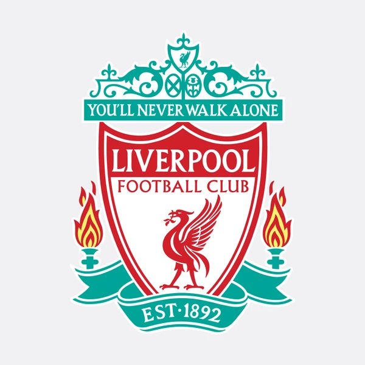
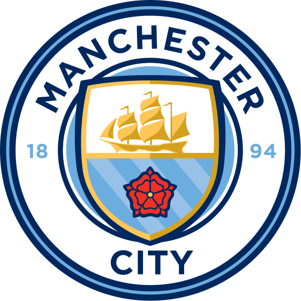
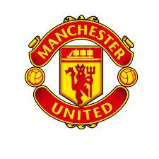
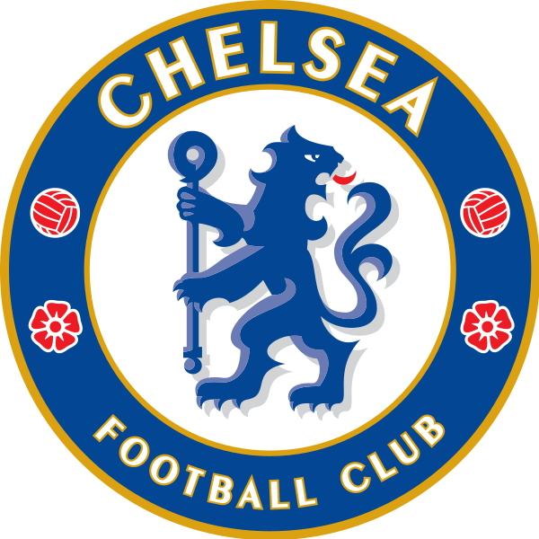

About
Despite significant European success in the 1970s and early 1980s, the late 1980s marked a low point for English football. Stadiums were crumbling, supporters endured poor facilities, hooliganism was rife, and English clubs were banned from European competition for five years following the Heysel Stadium disaster in 1985. The Football League First Division, the top level of English football since 1888, was behind leagues such as Italy's Serie A and Spain's La Liga in attendances and revenues, and several top English players had moved abroad
The Premier League, often referred to as the English Premier League or the EPL, is the top level of the English football league system. Contested by 20 clubs, it operates on a system of promotion and relegation with the English Football League (EFL). Seasons run from August to May with each team playing 38 matches (playing all 19 other teams both home and away). Most games are played on Saturday and Sunday afternoons.
The competition was founded as the FA Premier League on 20 February 1992 following the decision of clubs in the Football League First Division to break away from the Football League, founded in 1888, and take advantage of a lucrative television rights deal. The deal was worth around £1 billion a year domestically as of 2013–14, with Sky and BT Group securing the domestic rights to broadcast 116 and 38 games respectively. The league is a corporation in which the member clubs act as shareholders, and generates €2.2 billion per year in domestic and international television rights. Clubs were apportioned central payment revenues of £2.4 billion in 2016–17, with a further £343 million in solidarity payments to English Football League (EFL) clubs.
The Premier League is the most-watched sports league in the world, broadcast in 212 territories to 643 million homes and a potential TV audience of 4.7 billion people. For the 2018–19 season average Premier League match attendance was at 38,181, second to the Bundesliga's 43,500, while aggregated attendance across all matches is the highest of any league at 14,508,981. Most stadium occupancies are near capacity. The Premier League ranks second in the UEFA coefficients of leagues based on performances in European competitions over the past five seasons as of 2019, only behind Spain's La Liga.
Clubs
The 2019–20 Premier League was the 28th season of the Premier League, the top English professional football league, since its establishment in 1992. Manchester City were the defending champions for the second successive year, after picking up the domestic treble the previous season. Liverpool won their first league title since 1990, the club's first of the Premier League era and 19th overall. The season was halted for over three months, following a decision on 13 March 2020 by the Premier League to suspend the league after a number of players and other club staff became ill due to the COVID-19 pandemic. The initial suspension, until 4 April, was then extended to mid-June.[3] The season recommenced with two matches on 17 June and a full round of matches played over the weekend of 19–22 June.
There are almost 20 clubs in the Premier League. The all time top teams are mention below.The top 5 teams are Liverpool, Manchester City, Manchester United, Chelsea and Leichester City. For detail information about the clubs mentioned please Click on the icon of Clubs given below.



